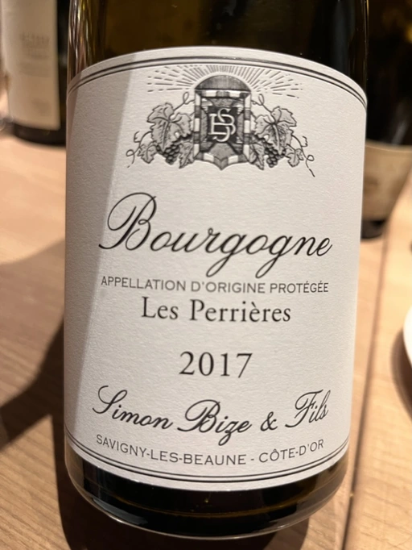

- Type
- Red Still, Dry
- Producer
- Simon Bize et Fils
- Vintage
- 2017
- Location
- France, Bourgogne AOC
- Grapes
- Pinot Noir
- Alcohol
- 12.5
- Sugar
- NA
- Price
- 1150 UAH
- Cellar
- N/A
Ratings
2022-06-07 - 8.00
Tasted blind. Guessed Pinot Noir and Bourgogne. Had a very tough fight in my head regarding this one. Restrained old school style yet very young. Cherry and earth notes. Hard on tannin, good acidity. Overall elegant, stylish and sophisticated.
Wine #3 on a blind tasting event by Vasyl Kalinichenko in 101 Bar.